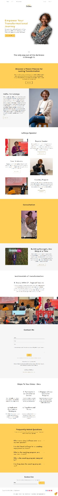

Speaker · Personal brand
Latonya Speaks
The challenge
Make the person, message and engagement path clear quickly.
Key decisions
- Keep the speaker central.
- Separate message from engagement details.
- Make enquiry easy for organizers.
The improved journey
Visitors can understand the speaker and move toward an engagement without searching.